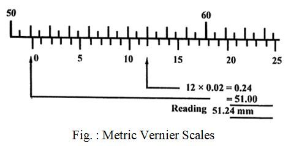

Q. 13 Discuss the method of measurement of Vernier calliper.
Vernier calliper से किस तरह पढ़ा जाता है समझाइये।
Ans. In a vernier caliper as shown in Fig. the vernier scale is read in conjunction with the main scale. The main scale is marked in small divisions of 0.5 mm. Therefore,
1 division on vernier scale = 12/25 mm = 0.48 mm
∴1 division of vernier scale is shorter than 1 division of main scale by
0.5 - 0.48 = 0.02 mm
This is known as least count or accuracy of vernier calipers. This accuracy can be increased by increasing the length of the vernier scale.
To obtain the reading, the number of divisions of the main scale are first read off. The vernier scale is examined to determine which of its division coincide or most coincident with a division on the main scale. The number of these 0.02 divisions are added to the main scale reading to give the total reading.

For example,
Reading on main scale = 51.00 mm
12 vernier divisions = 12 × 0.02 = 0.24
∴ Total reading = 51.00 + 0.24 = 51.24 mm